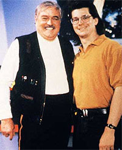
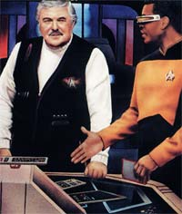
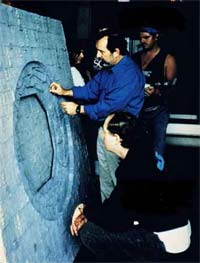
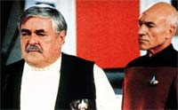
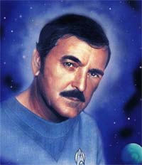
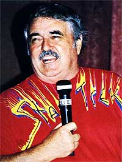

|
por
Fernando Penteriche
Antes de qualquer coisa, ao final de minha
ltima coluna prometi que esse texto seria sobre "Unification",
episdio que traz a presena de Spock na Nova Gerao.
Por problemas tcnicos, esse texto ser publicado em um futuro
prximo, mas no necessariamente na minha prxima coluna daqui
a trs semanas.
Depois de McCoy, Sarek e Spock, era chegada a hora de James Doohan
retomar seu papel como o engenheiro Montgomery Scott, o Scotty, e
fazer os ndices de audincia da Nova Gerao subirem.
O episdio em que o mais competente engenheiro da saga de Jornada
apareceria no sculo 24 foi chamado de "Relics",
ou em bom portugus, "Relquias".
"Uma das grandes qualidades de 'Relics'", diz Michael
Piller, " que o roteiro original no era sobre um episdio
com a volta de Scotty. Tratava-se de um conceito sobre um
engenheiro ou oficial da Frota sobrevivendo aps um acidente graas
um "looping" de teletransporte. Ou seja, ele nunca
seria rematerializado at que o resgate chegasse. E isso poderia
demorar anos, at dcadas".
Assim que o roteiro foi aprovado, logo Piller surgiu com a idia
de que o conceito fosse utilizado para trazer de volta ao convvio
dos fs um personagem da Srie Clssica, e sem dvida
Scotty era o que melhor se encaixaria nesse tema. J esperando
ouvir um "no" do todo-poderoso Rick Berman, Piller foi
surpreendido quando este no s aprovou a idia, como pediu
muitas citaes de episdios da Srie Clssica no
roteiro.
 Com
o retorno de Scotty completamente aprovado, Ron Moore foi o
escolhido para escrever o roteiro. E foi Ron que teve a idia de
recriar no holodeck a ponte da Enterprise original. Com Scotty e
Picard jogando conversa fora e tomando alguns drinks, ambos
sentados em lendrios assentos (Scotty na cadeira de Kirk, e
Picard na de Sulu), uma das cenas mais fantsticas da Nova
Gerao estava criada.
"Ns tnhamos Scotty e ento Ron teve a maravilhosa idia
de recriarmos a ponte de comando original", continua Michael
Piller. "Foi um dilema interessante, pois teramos um custo
financeiro elevado para construir tudo do nada."
E pelo motivo financeiro, a idia quase foi abandonada aps uma
reunio com Berman e o pessoal da produo. Porm, como seria
um momento mgico para a srie, algumas outras hipteses foram
levantadas, como a de alugar uma rplica da ponte de comando
utilizada em convenes. Mas, graas aos tcnicos de produo,
uma maneira foi encontrada de fazer a cena da ponte com menos
gastos. Apenas algumas partes dos cenrios seriam construdas, e
na tomada em que a ponte seria mostrada por inteiro, uma cena de
um episdio da srie original seria utilizada.
 Para
a direo de "Relics" foi escolhido Alexander
Singer, que faria sua estria na direo de um episdio de
Jornada nas Estrelas. E foi logo estreando com um dos mais caros e
complexos episdios j feitos na Nova Gerao.
"Minha preocupao principal era com os efeitos
especiais", recorda Singer. "Eu provavelmente nunca
havia trabalhado em um programa que utilizasse tantos efeitos, e
esse era meu dilema."
Outro dilema para o diretor seria a condio de astro convidado
de James Doohan. Singer nunca havia trabalhado com Doohan, e dada
a importncia do episdio, a presso era grande. Ele sabia que
Doohan nunca havia participado de um episdio ou filme de Jornada
na condio de protagonista, como seria agora em "Relics".
Mas quando encontrou James Doohan em pessoa, antes das filmagens,
Singer mudou de opinio. Doohan se mostrou totalmente aberto e
deixou o diretor em uma condio confortvel.
Em "Relics", a tripulao da Enterprise
descobre Scotty suspenso em um "looping" de
teletransporte, aps sua nave, a USS Jenolen, ter se chocado
contra uma "Esfera Dyson", uma construo gigantesca,
feita ao redor de um Sistema Solar. Scotty estava neste "looping"
h aproximadamente 75 anos, quando a USS Jenolen, que o levaria
para um planeta onde ele iria curtir sua aposentaria, se chocou
com a esfera. Trazido a bordo da Enterprise-D, Scotty se sente
completamente deslocado, pois tudo o que sabia obsoleto agora.
Porm ele acaba se mostrando vital ao salvar a Enterprise da
destruio no interior da Esfera Dyson.
A Esfera Dyson um conceito
criado pelo renomado fsico Freeman Dyson, em 1959. Trata-se uma
enorme (enorme mesmo!) esfera construda ao redor de um sistema
solar inteiro, com o intuito de se aproveitar ao mximo a energia
do Sol daquele sistema. Em "Relics", a esfera
descoberta pela tripulao da Enteprise encontrava-se
abandonada, pois a estrela daquele sistema no se mostrou confivel.
 A
equipe tcnica da Nova Gerao teve muito trabalho para
fazer o exterior da esfera, assim como para recriar a ponte
original da Enterprise. A cena em que Scotty v pela primeira vez
a ponte de comando no holodeck foi retirada do episdio clssico
"This Side of Paradise". Para o cenrio foram
construdos apenas a alcova do turboelevador e o painel da
engenharia em que Scotty sentava-se. A cadeira do capito e o
console central foram alugados de um f que organizava exposies
destas rplicas em convenes. Ao final, a cena foi um
casamento de construes modernas com muita pesquisa, e uma
montagem com uma cena que na poca tinha 26 anos de idade.
Como Berman pediu, muitas citaes foram adicionadas ao roteiro:
o comentrio sobre uma bebida "verde", uma clara referncia
uma cena do episdio da srie clssica "By Any Other
Name"; Scotty dizendo que "so necessrios pelo
menos 30 minutos para dar novamente a partida em um motor de dobra
frio", uma referncia a uma fala do prprio Scotty em "The
Naked Time"; e a citao Dohlman de Elaas, do episdio
"Elaan of Troyius".
 Ron
Moore ficou sentido com o corte de duas das cenas que ele mais
gostou no roteiro que escreveu: a cena em que citada a bebida
"verde" seria de Scotty com Guinan, mas Whoopi Goldberg
no estava disponvel para a gravao, ento acabou sendo com
Data mesmo. E uma em que Troi iria visitar Scotty em seus
aposentos. Nesta cena, Scotty ficaria encantado com a beleza e o
charme da conselheira, e diria ela "Eu sei o que quero, e
isso no est aqui", referindo-se dificuldade de
assimilar sua presena em uma poca diferente da dele. A cena
tambm revelaria que conselheiras comearam a fazer parte das
tripulaes de naves da Federao em 2330, ou seja, 34 anos
antes do incio da Nova Gerao. Um resqucio desta
cena com Troi que no foi filmada est na cena final do episdio,
quando Scotty se despede da conselheira com um beijo no rosto. Porm,
na verso que foi para a telinha, Scotty e Troi no se encontram
no episdio em nenhuma cena sequer, mas o final foi mantido.
Uma grande pisada na bola do episdio aconteceu nos momentos
finais, em que La Forge e Scotty so teletransportados da USS
Jenolen para a Enterprise, sendo que a Jenolen estava com os
escudos levantados. Indagado sobre isto, Ron Moore respondeu:
"No h explicao. Porm, se tivessemos percebido isso
antes, uma coisa que uma simples frase explicativa na boca de
algum resolveria".
 Um
assunto que muitos consideram uma grande furada na cronologia o
fato de Scotty aparecer em "Relics" (que se passa
em 2369), sendo que ele ficou suspenso no "looping" do
teletransporte por 75 anos, ou seja, desde 2294. Isso entraria em
conflito com a presena do engenheiro no filme para cinema "Jornada
nas Estrelas - Generations". No entra no.
A histria de "Generations" envolvendo os
eventos da viagem inaugural da Enterprise-B se passa em 2293, um
ano antes de Scotty seguir a bordo da Jenolen para a colnia de
Norpin V.
 Atravs
de pistas dadas em toda a passagem de Scotty em Jornada nas
Estrelas, posso assumir que ele nasceu em 2222, comeou a
servir a bordo da Enterprise original com 43 anos de idade e
desapareceu junto com a USS Jenolen em 2294, com 72 anos de idade,
aps ter passado por nove naves diferentes. A Enterprise original
foi a dcima, sendo a Enterprise-A, a ltima em que ele serviu,
a dcima primeira.
"Relics" funcionou. Foi o melhor episdio
envolvendo um personagem fixo da srie original de Jornada.
|